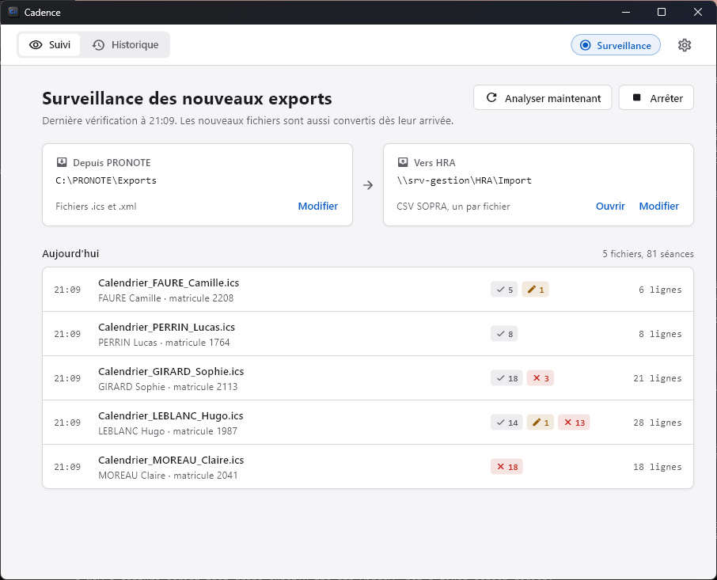

Les exports PRONOTE, convertis pour HRA.
Cadence surveille votre dossier d'exports et écrit chaque emploi du temps au format CSV SOPRA, sans intervention.

Installer
Windows
- Décompressez
Cadence-windows.zip, par exemple dansC:\Program Files. Vous obtenez un dossierCadence. - Lancez
Cadence.exedans ce dossier. Si Windows affiche « Windows a protégé votre ordinateur », cliquez sur Informations complémentaires, puis Exécuter quand même. - Saisissez votre clé de licence. Une connexion internet est nécessaire pour l'activation.
macOS
- Ouvrez
Cadence.dmget glissez Cadence dans le dossier Applications. - Au premier lancement, faites un clic droit sur Cadence, puis Ouvrir. macOS demande une confirmation la première fois seulement.
- Saisissez votre clé de licence. Une connexion internet est nécessaire pour l'activation.